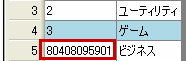

データグリッドウィンドウでのもっとも基本的な操作として｢データの編集｣があります。
セルの内容を上書きする場合は、セルを選択した状態で入力を開始してください。
セルの内容の一部を書き換える場合はセルを選択し、そのセルをさらにクリックすると、セルが編集モードになりますので そこで編集をします。
また、主キーが設定されているテーブルで主キー以外から入力を始めると主キーに自動てきにデータが挿入されます。
オプションで逐次保存がOFFになっている場合はデータグリッドウィンドウで変更した内容は変更した時点ではデータベースに反映されていません。
またフィルターを実行した場合もデータベースへのアクセスが発生するため、変更が反映されていない状態の結果が表示されます。(詳しくはフィルターのページを参照)
Copyright(C) 2008-2013 Pup All Rights Reserved.